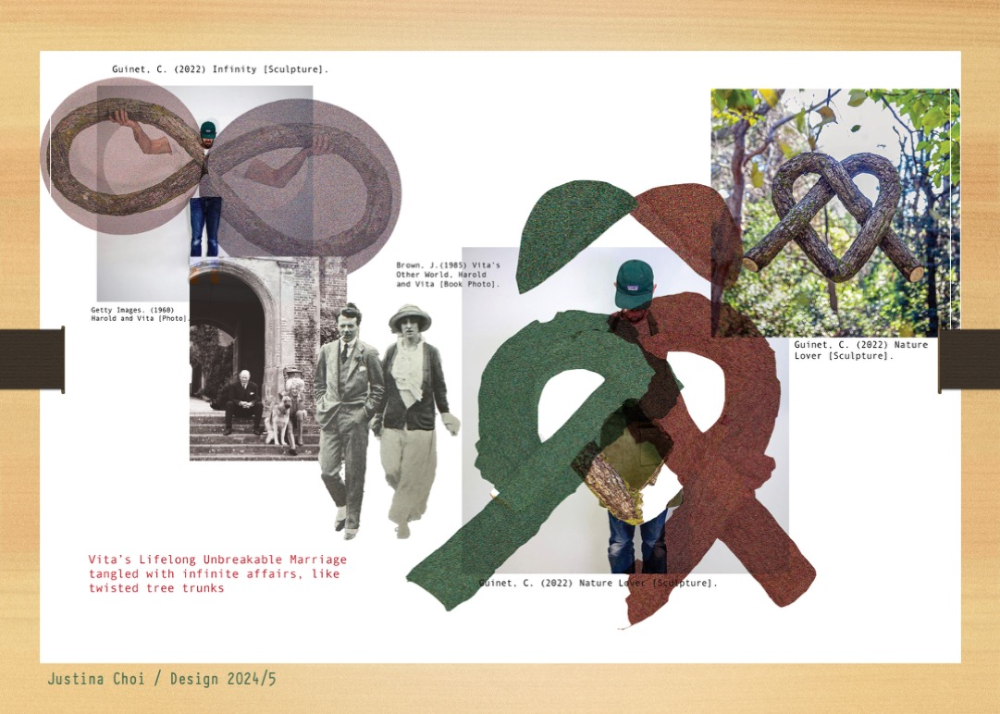
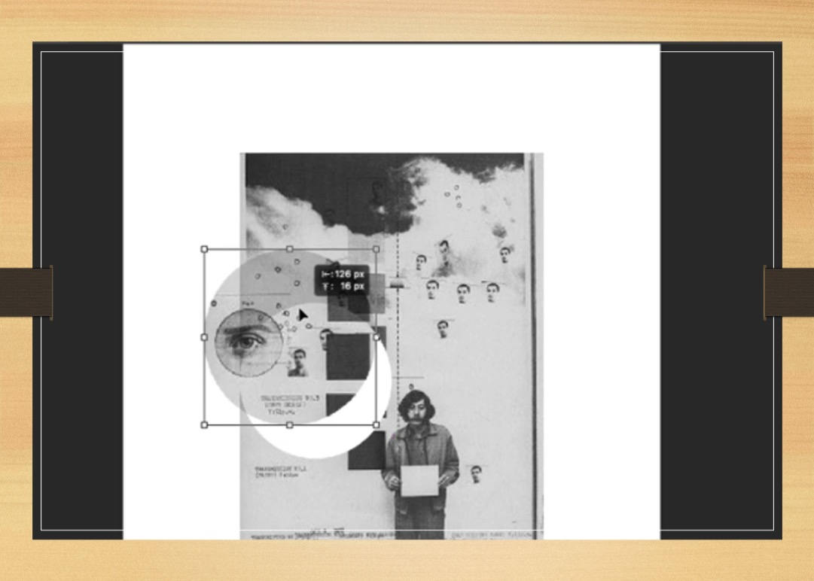
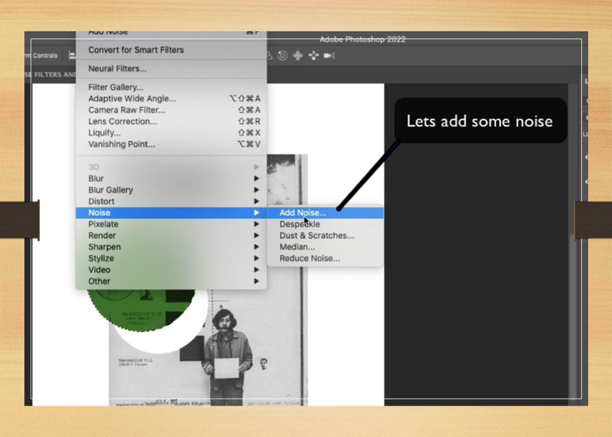
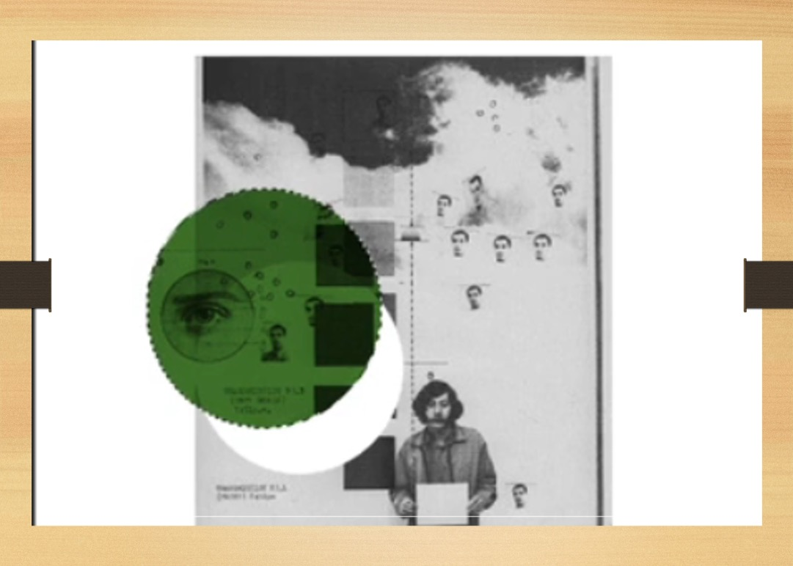
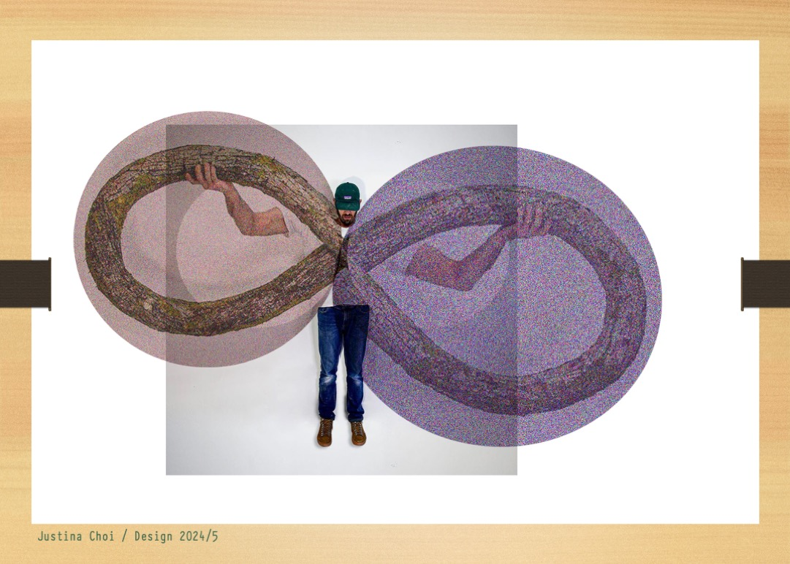
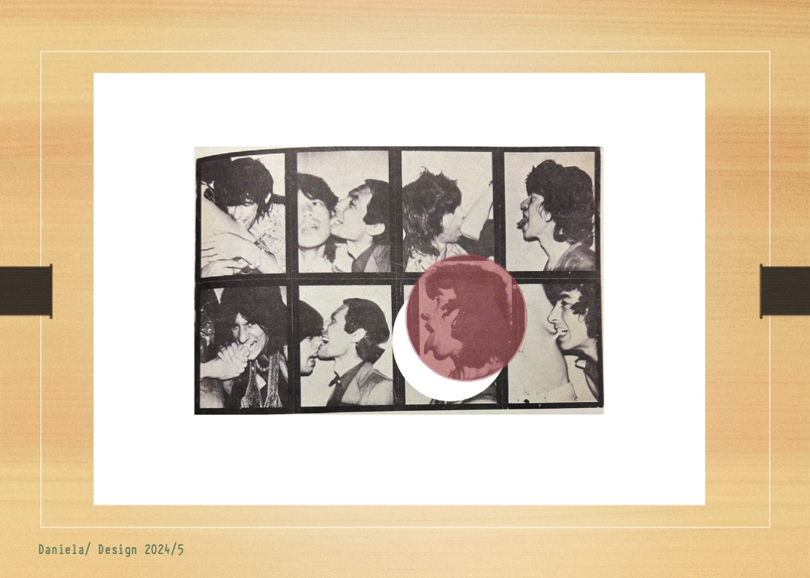
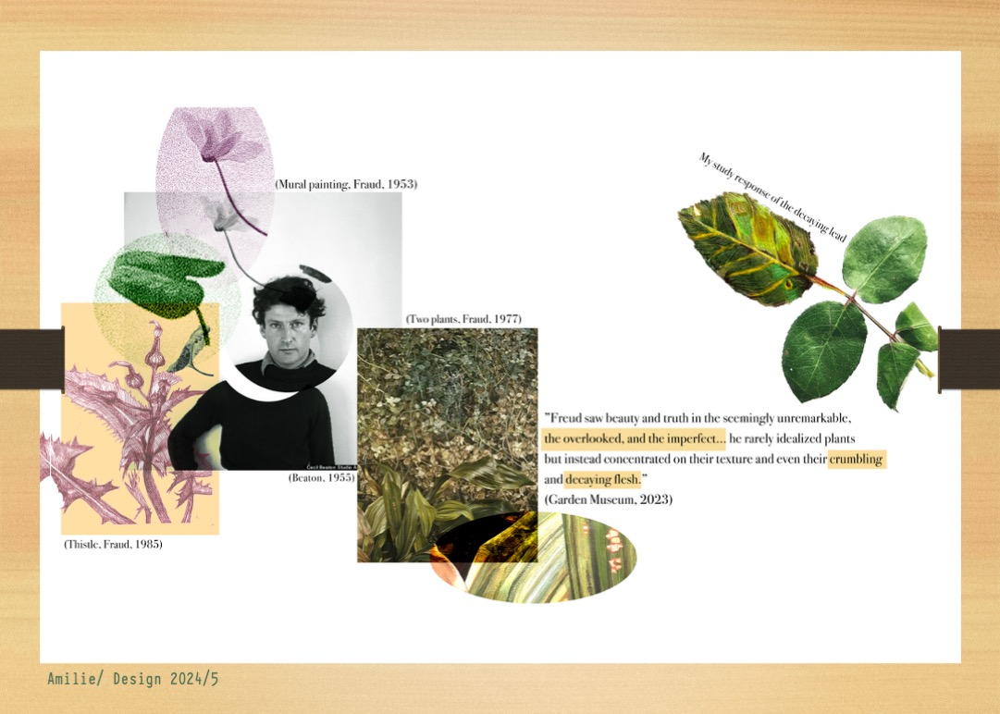
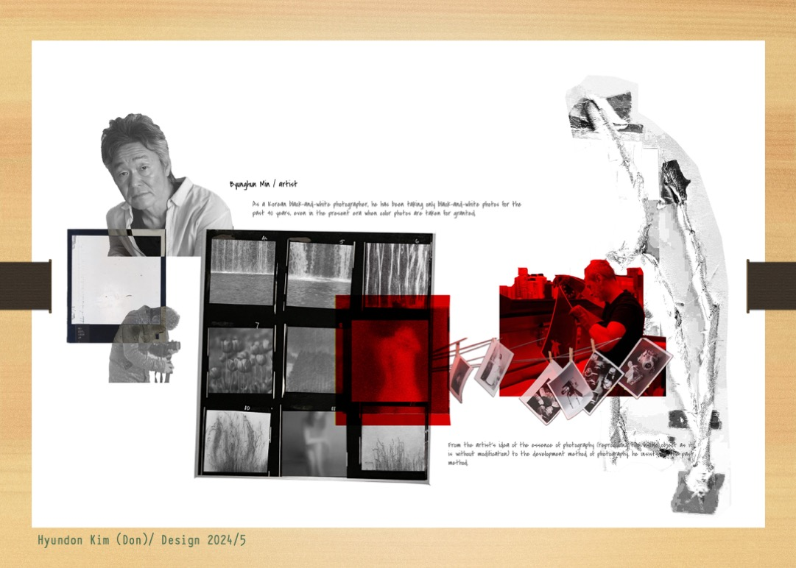
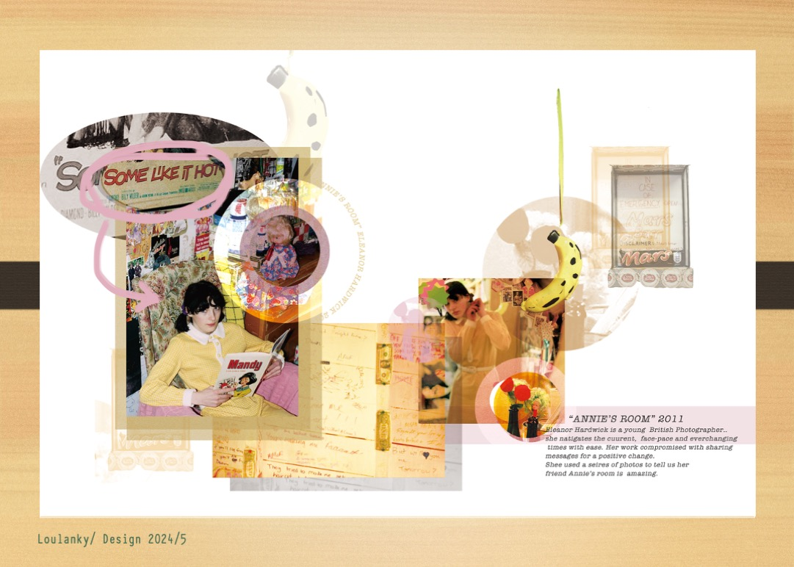

📋 OVERVIEW — WHAT YOU WILL DO TODAY
You will make an artist research page. You will enlarge details from an artwork. You will use noise and colour effects.

Image not found:
research_page_example.jpg
🔍 Enlarge
Example research page with enlarged details
What you'll learn
- Selecting key details
- Using digital techniques
- Adding noise filters
- Working with colour effects
- Creating visual connections
- Reflection
Your Tasks
Task 1 · Digital Techniques
- Enlarge details
- Use noise filters
- Apply colour effects
- Make technique samples
Task 2 · Research Page
- Make an artist research page
- Use the Task 1 techniques
- Include enlarged details
- Reference sources correctly
- Connect visual elements
Progress Report
- Record your process
- Add your exported JPEGs
- Share challenges and solutions
- Reflect on your learning
Assessment Criteria
Technical Skills
- Correct use of techniques
- Good detail selection
- Effective colour and filters
Research
- Good artist research
- Artwork analysis
- Correct references
Visual Design
- Clear layout
- Visual focus
- Purposeful design
Reflection
- Explain how you worked
- Name challenges
- Plan next steps
🔍 TASK 1 — DIGITAL TECHNIQUES
Watch the video first. Then open each step. Practise on one artwork.
- Choose a selection tool: Marquee M or Lasso L.
- Select a small detail.
- Copy ⌘/Ctrl+C. Paste ⌘/Ctrl+V. It goes on a new layer.
- Make the detail bigger: Free Transform ⌘/Ctrl+T.

Image not found:
technique_enlarging.jpg
🔍 Enlarge
- Go to .
- Try an amount of 5–15%.
- Tick Monochromatic.

Image not found:
technique_noise.jpg
🔍 Enlarge
- Make a new colour layer.
- Try a blending mode: Multiply or Overlay.
- Set opacity to 30–70%.
- Use colour to connect parts of your page.

Image not found:
technique_color.jpg
🔍 Enlarge
Practice
Do these three things.
1 · Choose image
- Pick an artwork
- Find 2–3 important details
2 · Apply techniques
- Enlarge your details
- Add a noise filter
- Try colour effects
3 · Save examples
- Save before / after images
- Write down your best settings
- Save as FULL_NAME_task1.jpg
Examples
Technique examples · click to enlarge

Image not found:
example_enlarging.jpg
🔍 Enlarge
Enlarged DetailsEffective selection and enlargement of textile details

Image not found:
example_noise.jpg
🔍 Enlarge
Noise FilterNoise filter adds texture and depth

Image not found:
example_color.jpg
🔍 Enlarge
Colour EffectsColour overlays create visual connections
🆘 Stuck? Try this
My detail did not go on a new layer.
Copy ⌘/Ctrl+C, then paste ⌘/Ctrl+V. Check the Layers panel.
My enlarged detail looks blurry.
This is normal. Start with a bigger image. Noise helps hide it.
Add Noise is greyed out.
Click a picture layer, not a text layer. If still grey: right-click › Rasterize Layer.
✅ Task 1 Checklist
🖼️ TASK 2 — RESEARCH PAGE
Make a research page about one artist. Use your Task 1 skills.
- Choose an artist related to your theme.
- Find good quality images of their work.
- Collect quotes or information about their work.
- Find important details to show.
- Choose details that show technique or idea.

Image not found:
detail_selection.jpg
🔍 Enlarge
- Use your skills from Task 1.
- Enlarge your chosen details.
- Add noise filters for texture.
- Use colour to link elements.
- Use Harvard referencing.
- Format: Surname, Initial. (Year) Title [Medium]
- Make a balanced layout.
- Make your text easy to read.
Referencing Guide
Why reference? It shows academic integrity. It gives credit to artists. It shows professional standards.
Image references
Surname, Initial. (Year) Title [Medium]
- Kusama, Y. (2016) Infinity Mirrors [Installation]
- Sherman, C. (1981) Untitled #96 [Photograph]
Quote references
"Quote" (Surname, Year, p.X)
- "My art originates from hallucinations." (Kusama, 2002, p.23)
- Online source with no pages? Leave out the page number.
Student Example
Student research page · click to enlarge

Image not found:
student_example.jpg
🔍 Enlarge
Good elements
- Clear enlarged details
- Correct references
- Good colour connections
- Balanced layout
- Effective noise filters
Technical notes
- Details focus on texture / pattern
- Colours create visual unity
- Noise improves textures
- Text does not overwhelm images
- References are complete
Design Tips
Visual hierarchy
- Make important things larger
- Use space well
- Guide the viewer's eye
Detail selection
- Choose meaningful details
- Show hidden elements
- Show textures and patterns
Visual connections
- Use colour to link elements
- Create visual relationships
- Treat images the same way
🆘 Stuck? Try this
My text is hard to read.
Put text on a plain area. Or add a box behind it.
I forgot to export a JPEG during the task.
Open Window › History. Click an earlier step. Export your JPEG. Click the last step to return. Do not edit while on an earlier step.
✅ Task 2 Checklist
📝 PROGRESS REPORT — DOCUMENT & REFLECT
Why? Your report shows how you learned, not only what you made. Reflection is assessed at Level 5.
Write your name. Add 2–3 exported JPEGs. Write a short caption for each one. Export each one: File › Export › Export As… › Format: JPG.
- Your enlarged details (Task 1)
- A detail with noise and a blending mode
- Your research page layout (Task 2)
Techniques
Which technique was most useful?
Challenges
What challenges did you face?
What worked
How did enlarging details help you understand the artwork?
Next time
How will you use these skills in future work?
💡 Useful phrases
- I used … to …
- This worked because …
- This was difficult because …
- Next time, I will …
Download your report as a PDF. You will upload it in Submit.
✅ Progress Report Checklist
📤 SUBMIT — UPLOAD TO PADLET
Upload three things to Padlet.
1 · Task 1
One example of your digital techniques.
FULL_NAME_task1.jpg
2 · Task 2
Your research page with digital techniques.
FULL_NAME_task2.jpg
3 · Progress Report
Your Progress Report PDF.
How to submit
- Go to Padlet
- Click the + button
- Add your full name as the title
- Upload your file
- Click Publish
Go to Padlet ↗
✅ Submit Checklist
❓ KNOWLEDGE CHECK — QUICK QUIZ
Choose one answer. Wrong? Try again.
1.Which tool helps you select details to enlarge?
2.What is the correct format for Harvard referencing?
3.Which setting should you tick when you add a noise filter?
4.Which blending mode darkens images?
5.Why do we enlarge details in research pages?
0 / 5 correct